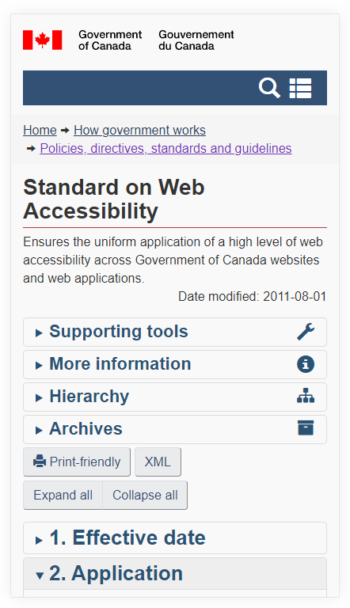
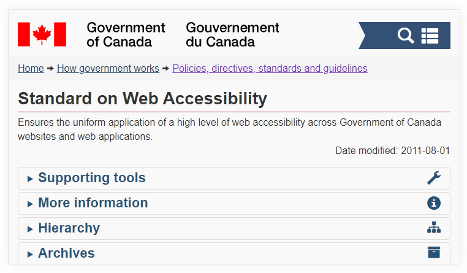

As per WCAG 2.1 Success Criterion 1.3.4: Orientation, content does not restrict its view and operation to a single display orientation, such as portrait or landscape, unless a specific display orientation is essential.
Enable users to view your content in the orientation (portrait or landscape) they prefer. It’s possible to restrict the orientation, but this can create problems. For instance, some users have their mobile devices mounted in a fixed orientation (e.g., on the arm of a power wheelchair).
The success criterion allows the orientation to be restricted/locked if it’s essential to the application, such as a landscape orientation when representing piano keys or taking a photo of a cheque.
In this example, the content is prevented from displaying in landscape mode by a CSS media query that detects landscape orientation and a transform style rule that rotates the content 90 degrees (with supporting styles).
CSS
Code begins
@media screen and (min-width: 320px) and (max-width: 767px) and (orientation: landscape) {
html {
transform: rotate(-90deg);
transform-origin: left top;
width: 100vh;
overflow-x: hidden;
position: absolute;
top: 100%;
left: 0;
}
}
Code ends
Source: Orientation lock
In this example, the page displaying the Government of Canada’s Standard on Web Accessibility has no code touching screen orientation. The page rotates by default in mobile devices.
Example begins


Example ends